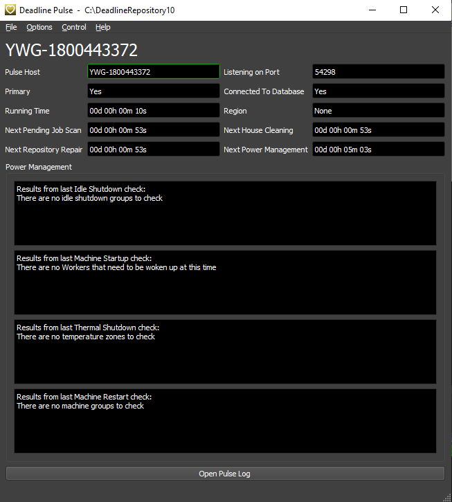
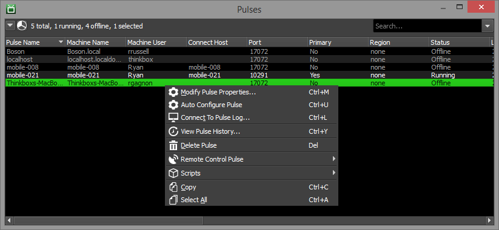

Pulse¶
Overview¶
Pulse is an optional mini server application that performs maintenance operations on the farm, and manages more advanced features like Auto Configuration, Power Management and Statistics Gathering. If you choose to run Pulse, it only needs to be running on one machine. Note that Pulse does not play a role in job scheduling, so if you are running Pulse and it goes down, Deadline will still be fully operational (minus the advanced features). Note to build redundancy if Primary Pulse fails in your environment, consider protecting yourself by configuring Pulse Redundancy.
If you are choosing a machine to run Pulse, you should be aware that non-Server editions of Windows have a TCP/IP connection limitation of 10 new connections per second. If your render farm consists of more than 10 render nodes, it is very likely that you’ll hit this limitation every now and then (and the odds continue to increase as the number of machines increase). This is a limitation of the operating systems, and isn’t something that we can workaround, so we recommend using a Server edition of Windows, or a different operating system like Linux.
Running Pulse¶
To start Pulse:
On Windows, you can start Pulse from the Start Menu under Thinkbox\Deadline.
On Linux, you can start Pulse from a terminal window by running the deadlinepulse script in the bin folder.
On macOS, you can start Pulse from Finder by running the DeadlinePulse application in Applications/Thinkbox/Deadline.
You can configure Pulse to launch automatically when the Launcher starts up (similar to how the Worker does this). This can be done by adding the LaunchPulseAtStartup=True to the system’s deadline.ini file. See the Client Configuration documentation for more information.
Pulse can also be started from a command prompt or terminal window. For more information, see the Pulse Command Line documentation.
Viewing the Pulse Log¶
To view Pulse’s current log, simply press the Open Pulse Log button at the bottom of the Pulse window. This will open the Pulse log in a new window to avoid impacting the performance of the main Pulse application.

If Pulse is running in the background or without an interface, you can connect to the Pulse log from the command line. In a command prompt or terminal window, navigate to the Deadline bin folder (Windows or Linux) or the Resources folder (macOS) and run the following, where “PULSENAME” is the name of the Pulse you want to connect to:
deadlinecommand -ConnectToPulseLog "PULSENAME"
Configuring Pulse¶
Pulse needs to be configured so that the Worker applications know how to connect to Pulse. There are a couple different ways to configure Pulse, which are described below.
Auto Configuration¶
If you launch Pulse, and a Primary Pulse hasn’t been set yet, it will automatically configure itself to be the Primary, and configure itself to be connected to by its host name. These settings can be changed from the Pulse Panel in the Monitor at any time. See the Pulse Configuration documentation for more information.
If Pulse has already been configured, but you want to quickly switch to another machine to run Pulse on, simply launch Pulse on the desired machine. Then when it appears in the Pulse list in the Monitor, right-click on it and select Auto Configure Pulse. Generally, this feature is only available in Power User mode.
Manual Configuration¶
The connection settings, as well as additional settings, can be configured for Pulse from the Monitor. Advanced features like Auto Configuration, Power Management, and Statistics Gathering can also be configured in the Monitor. See the Pulse Configuration documentation for more information.
Command Line Options¶
To run Pulse from a command prompt or terminal window, navigate to the Deadline bin folder (Windows or Linux) or the Resources folder (macOS) and run the ‘deadlinepulse’ application. To view all available command line arguments, you can run the following:
deadlinepulse -help
Available Options¶
To start Pulse without a user interface, use the -nogui option:
deadlinepulse -nogui
To start Pulse without the splash screen, use the -nosplash option:
deadlinepulse -nosplash
To shut down Pulse if it’s already running, use the -shutdown option:
deadlinepulse -shutdown
FAQ¶
Can I run Pulse on any machine in my farm?
You can run Pulse on any machine in your farm, including the Repository or Database machine. However, for larger farms, we recommend running Pulse on a dedicated machine.
When choosing a machine to run Pulse on, you should be aware that non-Server editions of Windows have a TCP/IP connection limitation of 10 new connections per second. If your render farm consists of more than 100 machines, it is very likely that you’ll hit this limitation every now and then (and the odds continue to increase as the number of machines increase). Therefore, if you are running Pulse on a farm with 100 machines or more, we recommend using a Server edition of Windows, or a different operating system like Linux.
Can I run Pulse as a service or daemon?
Yes. If you’re running the Launcher as a service or daemon, then it will run Pulse in the background as well. See the Client Installation documentation for more information.
If Pulse is shutdown or terminated, is the Power Management feature still functional?
In this case, the only aspect of Power Management that is still functional is the Temperature Checking. Redundancy for Temperature checking has been built into the Worker application, so if Pulse isn’t running, you’re still protected if the temperature in your farm room begins to rise.
Which temperature sensors work with Power Management?
We have tested with many different temperature sensors. Basically, as long as the temperature sensors use SNMP, and you know its OID (which is configurable in the Power Management settings), it should work.
Can I run multiple Pulse’s on separate machines?
Yes and like typical IT best practices, this will provide Pulse Redundancy. Note, only one Pulse can be Primary at any given time.

{kind=link}